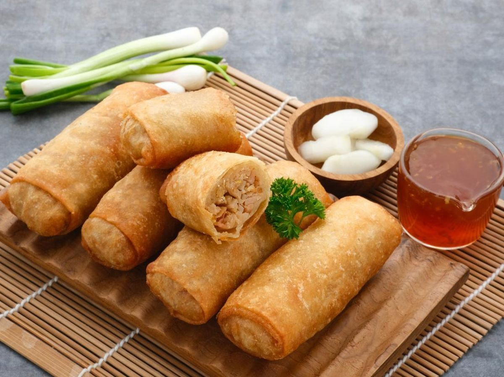

Apakah Keunikan Dari Lumpia Semarang ?
Keunikan lumpia semarang terletak pada rasa dan teksturnya yang berbeda dari lumpia lainnya. Kulit lumpianya sangat tipis dan renyah,
sehingga menghasilkan sensasi garing dan lezat di setiap gigitannya. Sementara itu, isian rebung dan taogenya memberi rasa segar,
dan ayam cincangnya memberi rasa gurih yang khas.

Lumpia Semarang Berisi Apa Saja?
Lumpia semarang (atau loenpia semarang)
adalah makanan semacam rollade yang berisi rebung, telur, dan daging ayam atau udang.

Siapa Pencipta Lumser?
Pencipta Lumser adalah Tjoa Thay Yoe, seorang pendatang dari China yang singgah ke Semarang pada akhir abad ke-19.

Kapan Didirikan ?
Cik Meme adalah generasi ke-5 Lumpia asli Semarang yang dipelopori oleh pasangan suami istri,
Tjoa Thay Joe dan Mbok Wasi yang menemukan makanan khas Semarang, Lumpia pada tahun 1870 dari hasil akulturasi.

Mengapa Semarang Di Juluki Kota Lumpia
Kota Semarang biasanya disebut dengan Kota Lumpia karena identik dengan makanan khasnya yaitu Lumpia. Selain itu,
banyak julukan unik untuk Kota Semarang seperti Kota Atlas, Kota Port of Java, dan Kota Venetie van Java